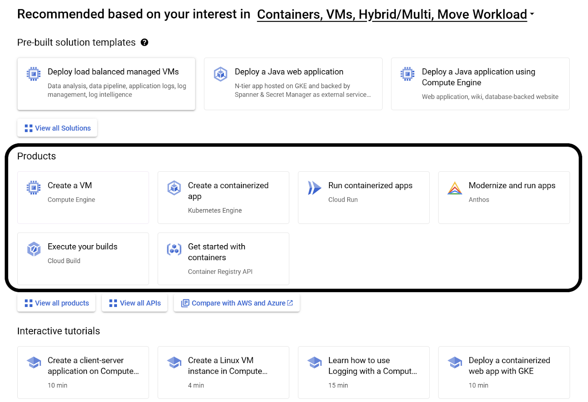
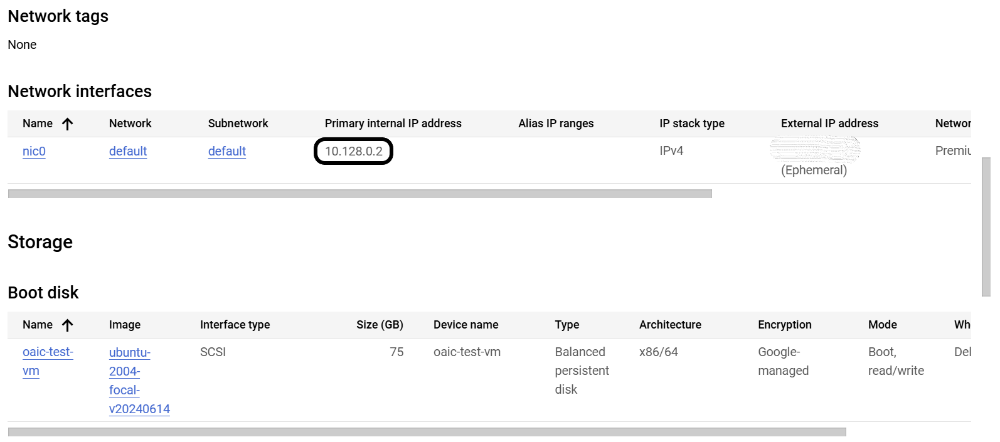
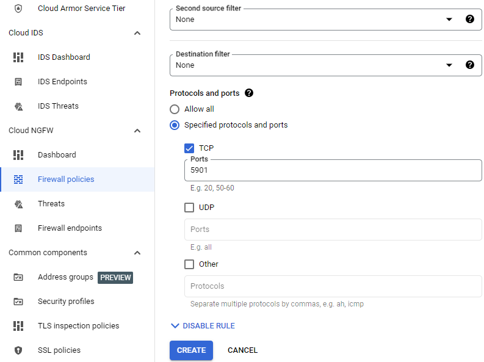
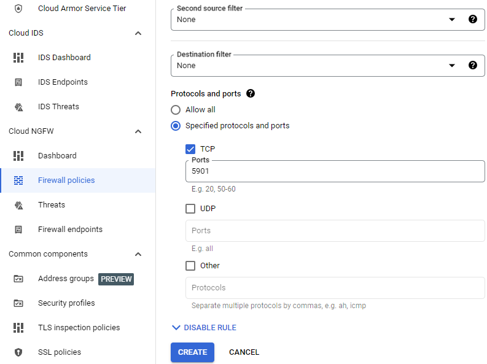

Day 1 - Google Cloud Platform Setup
Table of Contents
Pre-requisites
Google Account
Active debit/credit card for identification
Home address
Note
The service will not charge you unless you specifically agree. This is solely to ensure that you are not a robot.
Accessing GCP
Step 1: Follow this link to GCP: Google Cloud Platform
Step 2: Click “Get started for free.”

Step 3: Login to your Google account.
Step 4: Follow on-screen instructions on signing up.
Step 5: Fill out the usage survey.
Creating the Virtual Machine
Step 1: Scroll down on the main page until you see the category titled “Products”
Step 2: Select the option “Create a VM”

Step 3: You will now see the Compute Engine API, click “Enable”
Step 4: Once the Compute Engine API is completed, you will see a VM Instances page. Click the button near the center of the screen labeled “Create Instance”
Step 5: Now that you are on the VM configuration screen, name the machine whatever you want (name must be lowercase, hyphen, and numbers). You should also apply the following configuration changes:
Step 5.1: Select E2 under “Machine Configuration”
Step 5.2: Under “Machine type”, click “Custom” and set “Cores” to 24 vCPU (12 core) and change “Memory” to 48 GB
Step 5.3: Under “Boot Disk”, click “CHANGE”.
Select “Ubuntu” from the “Operating system” dropdown menu
Select “Ubuntu 20.04 LTS” from the “Version” dropdown menu. Make sure it is the x86/64, amd64 image.
Change “Size (GB)” to 75 GB. Change this if you so desire.
Click “SELECT” to save and close these settings.
Step 6: Once all the configuration changes have been made, click “Create” at the bottom.
Note
It may take a few minutes for the VM to install and come online. You can see each VM’s power status from the “VM Instances” page.
Demo/Testing
Once the VM has finished installing and is set up, you can click on your newly created VM which will lead you to the VM’s information page. From here you can control power status, storage info, networking info, and more
Note
In order to restart, you must stop then start the VM from the three-dot icon to the left of the “Equivalent Code” button, there is no “restart”
To get the IP of the machine, you can refer to the Networking Interfaces Section:
In order to access the VM, you have to SSH into the machine. Google has their own browser based SSH client that you can do by clicking the “SSH” button at the top left under Details or you can choose another option via the little arrow to the right of the “SSH” button.
Warning
When SSH-ing into the VM, we recommend using tmux as splitting the terminal proved to be easier than a bunch of separate tiny SSH sessions. This is primarly important for later in demos where 8-14 terminals is needed.
If a file is needed to be transferred from your machine to the VM or vise versa, you can choose from the two options at the top of the Google SSH client. In order to get a file, you must provide the absolute path of the file and to send a file it is done through a GUI interface.
VNC access (optional)
First, install VNC on the server:
VNC server Installation
Open an SSH connection then run the following commands:
sudo apt update -y
sudo apt install xvfb x11-utils tightvncserver icewm -y
export DISPLAY=:0
Xvfb &
# Wait a bit for Xvfb to start up before running the following X applications.
sleep 1
# Enter a password below, perhaps "testing".
tightvncserver
VNC firewall configuration
Now, open a port to allow VNC access:
Click on the nic0 link:

Next, click on the default network:

Next, click on the Firewalls tab:

Next, click on the add firewall rule button, then set:
Name:
vncTargets:
All instances in the networkSource IPv4 ranges:
0.0.0.0/0Check the TCP box under Protocols and ports, then enter a port of
5900-5901.Click the
Createbutton.
 

VNC client
Download tightVNC, install it, then run it. Enter an address of IP of the machine::5901; for example, 34.28.200.62::5901. (To determine your machine’s IP address, see Demo/Testing.) Finally, press the Connect button. VNC should open; right-click then select Terminal.
Alternatives
In the case that you cannot use GCP, Azure by Microsoft has a similar service, but this option was not tested and may not work for you. Additionally, Azure has more limiting credit and time for their free credit. Other than these issues, the process should be similar to GCP and may work as an appropriate alternative.
Link to Azure’s services: Azure Cloud Computing Services